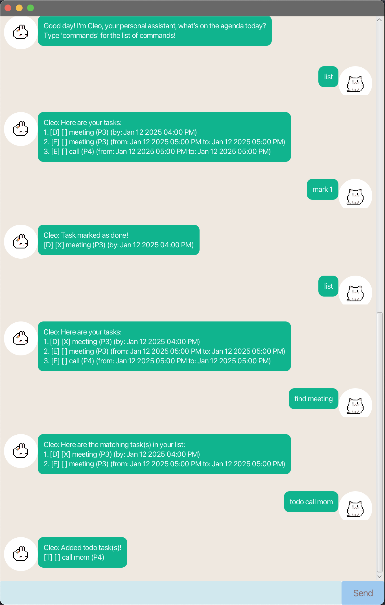
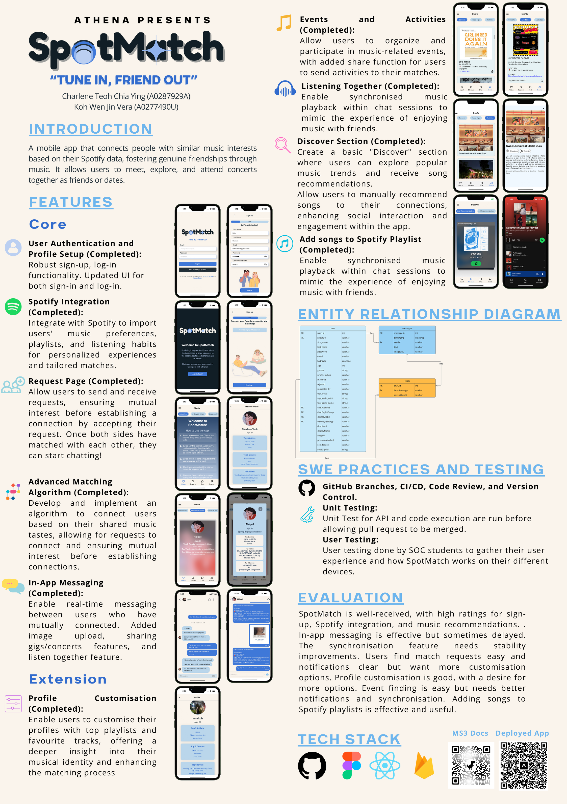

Projects

Cleo Chat Bot
Cleo is your friendly, interactive personal assistant chatbot designed to help you keep track of tasks, deadlines, and events. With an intuitive GUI, Cleo is designed to be responsive and easy to use. Whether you’re managing daily tasks or planning future events, Cleo is here to assist you!
View Project

SpotMatch
SpotMatch is a social networking mobile application designed to connect users based on their shared music preferences. Developed as part of the NUS Orbital 2024 project, SpotMatch leverages Spotify's extensive music data to create personalized user experiences that foster meaningful connections among music enthusiasts.
View Project